Biology
Respiration in Plants
Step-wise enzymatic oxidation of food; energy conserved as ATP; occurs in cytoplasm and mitochondria
CELLULAR RESPIRATION BASICS
📖Definition & Introduction
- Cellular respiration is step-wise, enzyme-controlled oxidation of food inside cells, conserving energy as ATP.
- It involves breaking C–C bonds of complex organic molecules and transferring electrons in small steps.
- Energy is not released in one burst as heat; step-wise release enables coupling to ATP synthesis.
- ATP is the cell’s energy currency: synthesised during respiration and hydrolysed where energy is needed.
- Respiration also supplies carbon skeleton intermediates used to synthesise other biomolecules.
🖼️Diagram
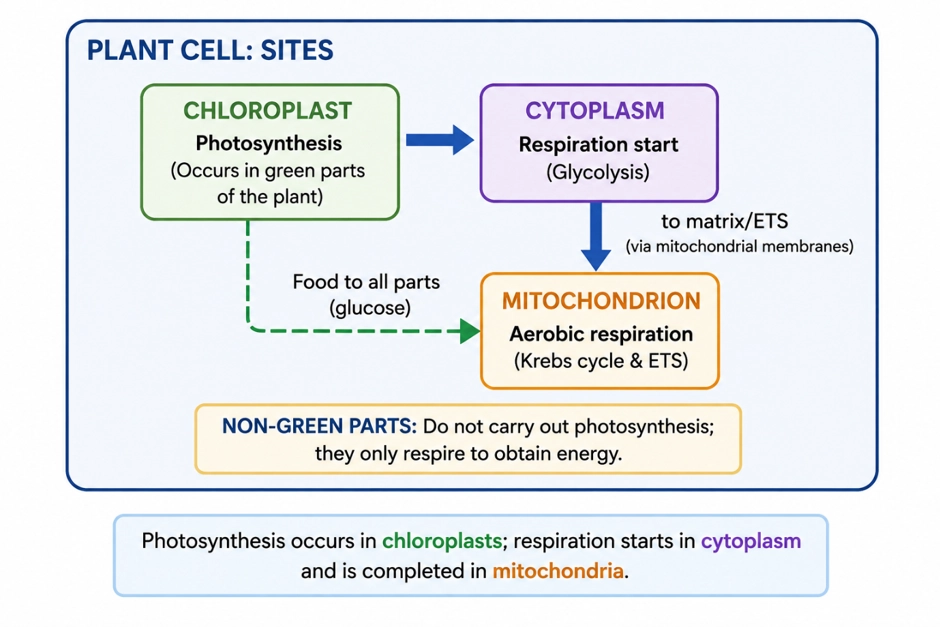
🎯Key Concepts
- 🧩Respiration is a pathway of many enzyme steps, not a single reaction.
- 🔥Step-wise oxidation reduces heat loss; energy is captured in ATP.
- ⚡ATP ↔ ADP + Pi couples respiration to cellular work.
- 🌿Only chloroplast-containing cells photosynthesise; all living cells respire.
- 🏭In plant eukaryotic cells: respiration starts in cytoplasm and continues in mitochondria.
🔎WHAT MAKES RESPIRATION "STEP-WISE"?
- Food oxidation occurs via many enzyme-controlled reactions.
- Energy is released in small steps, not in one heat burst.
- Captured energy forms ATP and useful intermediates for biosynthesis.
⚙️PHOTOSYNTHESIS VS RESPIRATION: KEY LOCATION IDEA
- Photosynthesis: chloroplasts (typically green tissues).
- Respiration: cytoplasm + mitochondria in eukaryotic plant cells.
- Exam trap: not all plant cells photosynthesise; all living cells respire.
- Non-green parts use translocated sugars for respiration.
⚖️PHOTOSYNTHESIS vs CELLULAR RESPIRATION (PLANT CELLS)
| Basis | Photosynthesis | Cellular respiration |
|---|---|---|
| Primary role | Stores light energy as chemical energy in carbohydrates | Releases energy from food; conserves it as ATP |
| Main site (eukaryotes) | Chloroplast | Cytoplasm + mitochondria |
| Where in plant body | Only chloroplast-containing (usually green) cells | All living cells; includes non-green parts |
| Core chemical theme | Reduction and synthesis of carbohydrates | Step-wise oxidation; breaking C–C bonds |
| Key useful outputs | Carbohydrates (food/storage) + O2 (released) | ATP + metabolic intermediates (carbon skeletons) |
💡Memory Technique
“Mnemonic: Chloro-Photo, Cyto-Start, Mito-Main”
What plants oxidise for ATP: usually carbohydrates, but alternatives join under specific conditions
RESPIRATORY SUBSTRATES
📖Definition & Introduction
- Respiratory substrates are compounds oxidised in cells during respiration to release energy trapped as ATP.
- In plants, carbohydrates are the usual substrates; commonly glucose, and from sucrose or starch.
- Under certain conditions, plants may oxidise fats, proteins and organic acids as alternative substrates.
- Alternative substrates typically enter respiration at different points (not necessarily as glucose).
- Choice of substrate depends on availability, tissue type, developmental stage and stress/starvation.
🖼️Diagram
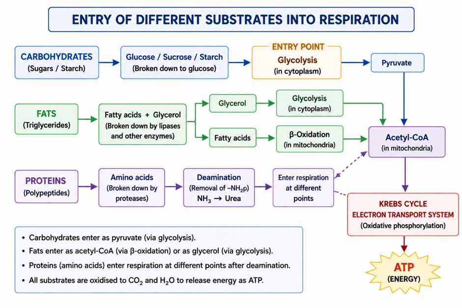
🎯Key Concepts
- 🍞Carbohydrates are preferred: quick entry via glycolysis after conversion to glucose.
- 🍬In plants, sucrose is a major transport sugar; it is split to glucose + fructose before glycolysis.
- 🧈Fats are split to glycerol + fatty acids; fatty acids yield acetyl-CoA (high energy) for respiration.
- 🥜Proteins are used after proteolysis; amino acids are deaminated, then carbon skeletons enter respiration.
- 🍋Organic acids can directly feed into the TCA cycle, especially when carbohydrates are limited.
- 🧩Because many substrates feed in, respiration links breakdown and biosynthesis (amphibolic nature).
🔎USUAL SUBSTRATE: CARBOHYDRATES
- Preferred substrate in most plant tissues because it is readily available and easily oxidised.
- Photosynthesis stores energy mainly in carbohydrate bonds: glucose, sucrose and starch.
- In plants, respired glucose often comes from sucrose breakdown and starch mobilisation.
- Not all plant cells photosynthesise; non-green parts respire using translocated carbohydrates.
⚙️ALTERNATE SUBSTRATES: WHEN AND HOW THEY FEED IN
- When carbohydrates are scarce (starvation, prolonged darkness, senescence), plants can switch substrates.
- Fats: split to glycerol + fatty acids; fatty acids → acetyl-CoA; glycerol enters glycolysis after conversion.
- Proteins: proteases → amino acids; deamination removes amino group; carbon skeleton enters as pyruvate/acetyl-CoA/TCA intermediates.
- Organic acids: can be directly oxidised via the TCA cycle when present/needed.
- Exam idea: different nutrients join the same pathway at different steps, so respiration is not limited to glucose entry.
⚖️Carbohydrates vs Fats vs Proteins as Respiratory Substrates (Plants)
| Basis | Carbohydrates | Fats | Proteins |
|---|---|---|---|
| Usuality | Most common substrate | Used when needed/available | Used under specific conditions |
| Typical plant sources | Glucose, sucrose, starch | Stored oils (e.g., some seeds) | Storage/structural proteins |
| Pre-processing | Often converted to glucose | Lipolysis: glycerol + fatty acids | Proteolysis: amino acids; then deamination |
| Entry into pathway | Glycolysis (early entry) | Fatty acids → acetyl-CoA; glycerol → glycolysis | Carbon skeleton enters at several points (pyruvate/acetyl-CoA/TCA) |
| Key caution | Fast, direct fuel | Not the default in most tissues | Requires removal of nitrogen; not a first-choice fuel |
💡Memory Technique
“Mnemonic: "C-FPO" (See-Fee-Po)”
Gases move by diffusion via stomata and lenticels; net direction depends on respiration vs photosynthesis
PLANT GAS EXCHANGE
📖Definition & Introduction
- Plant gas exchange is the diffusion-based movement of O2 and CO2 between plant tissues and the atmosphere.
- For cellular respiration, plants require O2 and release CO2.
- In photosynthesising tissues (in light), the net exchange may be CO2 in and O2 out because photosynthesis occurs along with respiration.
- Main openings: stomata (leaves, green stems) and lenticels (woody stems/older roots).
- Most plant parts are locally self-sufficient: gases diffuse directly to nearby living cells; little long-distance gas transport.
- Plants do not need lungs/gills because respiration rate is low and diffusion distances are short.
🖼️Diagram
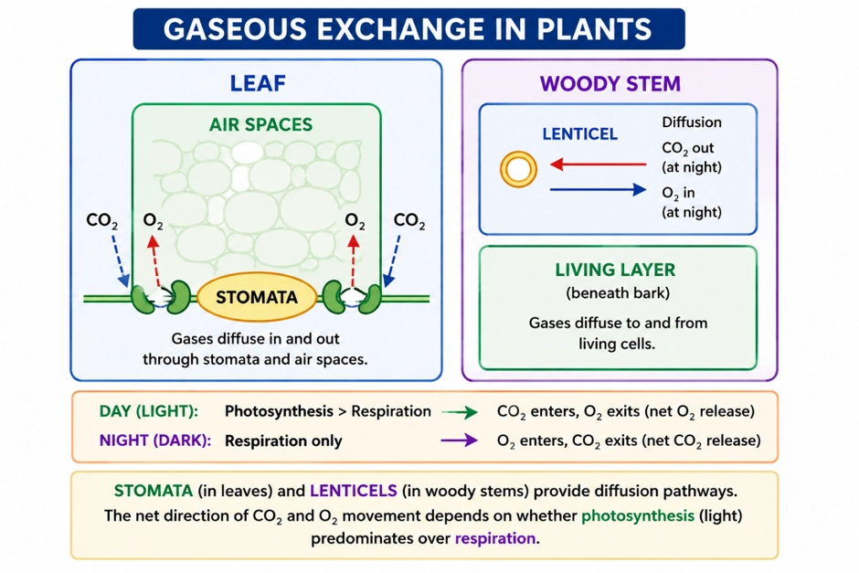
🎯Key Concepts
- 🌬️Diffusion drives exchange: gases move down their concentration gradients.
- 🍃Stomata connect outside air to internal intercellular (parenchyma) air spaces.
- 🪵Lenticels in bark allow diffusion to living layers in woody stems.
- 🏠Loose parenchyma packing forms an internal air network: short routes to cells.
- 🐢Low metabolic demand means diffusion alone usually meets O2 needs for respiration.
- ☀️In green cells (light), photosynthesis can make O2 and consume CO2, changing the net gas flow.
🔎WHY NO SPECIALISED RESPIRATORY ORGANS?
- Local self-sufficiency: each part meets its own O2/CO2 needs; little gas transport between parts.
- Short diffusion distances: most living cells are near surface; interiors are often non-living support tissues.
- Low respiration rate: roots, stems, leaves respire much slower than animals of similar size.
- Internal air network: loose parenchyma creates interconnected air spaces aiding rapid diffusion.
- Photosynthetic help (green parts): O2 is produced within photosynthesising cells, so O2 availability is not limiting there.
⚙️PATHWAYS OF GAS MOVEMENT
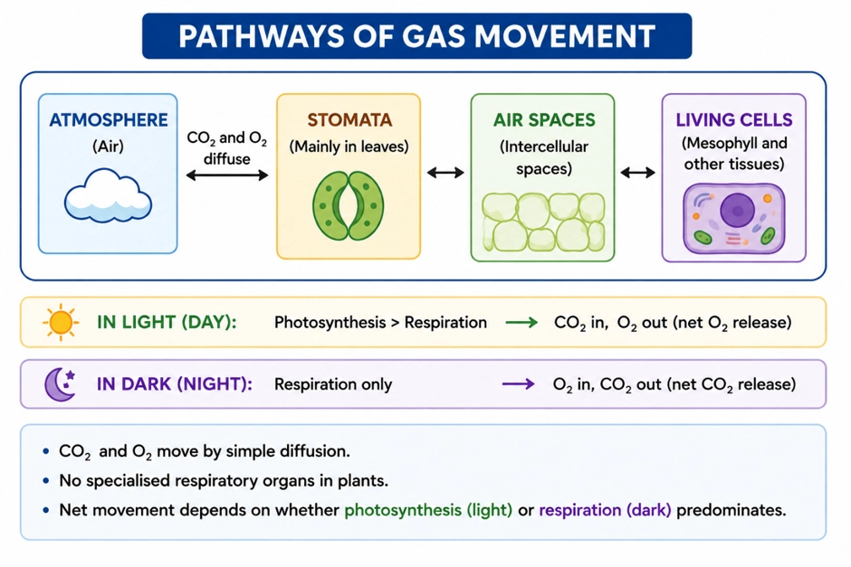
- Leaf: atmosphere → stoma → substomatal cavity → intercellular air spaces → cell surface → respiration/photosynthesis.
- Woody stem: atmosphere → lenticel → bark air spaces → living cells under bark → respiration.
- CO2 produced in respiration diffuses outward; CO2 is also consumed in photosynthesis in light.
- Diffusion is effective because surfaces of many cells contact air spaces directly.
⚖️STOMATA vs LENTICELS (GAS EXCHANGE OPENINGS)
| Basis | Stomata | Lenticels |
|---|---|---|
| Main location | Leaves; young green stems | Woody stems; older roots |
| Position in plant body | Epidermis (surface pores) | Bark region (periderm openings) |
| Connects to | Substomatal cavity + leaf air spaces | Air spaces in bark + living tissues beneath |
| Role in respiration (always) | O2 enters and CO2 exits by diffusion to support cellular respiration | O2 enters and CO2 exits by diffusion to support cellular respiration |
| Exam pointer | Major pathway for leaf gas exchange; also controls water loss via transpiration | Important for thick, woody organs where epidermis is absent |
💡Memory Technique
“Mnemonic: SLeD for plant gas exchange”
Cells oxidise glucose in controlled steps to conserve energy as ATP instead of losing it as heat
STEP-WISE OXIDATION STRATEGY
📖Definition & Introduction
- Step-wise oxidation strategy means glucose is oxidised through many enzyme-controlled reactions, trapping energy in ATP (and initially in reduced coenzymes like NADH/FADH2).
- In one-step oxidation (combustion), most released energy escapes as heat, becoming poorly usable for cells.
- In cellular respiration, small energy releases at specific steps are coupled to ATP synthesis.
- This controlled release avoids a sudden large heat output and allows efficient energy conservation.
- Overall products of complete aerobic oxidation remain CO2 and H2O, but formed via multiple stages.
🖼️Diagram
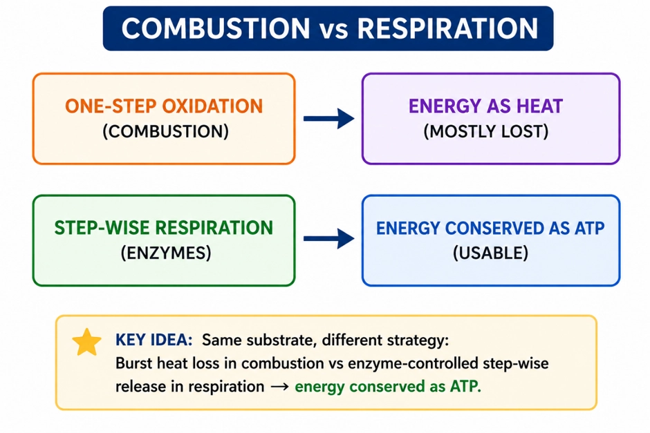
🎯Key Concepts
- 🧪Same overall oxidation can occur as one burst (combustion) or as many controlled steps (respiration).
- 🧩Enzymes split oxidation into many reactions; each step releases manageable energy packets.
- 🔗Energy release is coupled: oxidation energy drives phosphorylation of ADP to ATP.
- 🔋A major part of energy is conserved first in reduced coenzymes (NADH, FADH2) and then used for ATP formation.
- 🧯Step-wise oxidation prevents large, wasteful heat loss and enables regulated ATP production.
🔎COMPLETE COMBUSTION VS CELLULAR RESPIRATION (THE CORE IDEA)
- Complete combustion is effectively one-step oxidation; energy appears mainly as heat (and sometimes light).
- Cellular respiration achieves oxidation through a series of reactions, each catalysed by specific enzymes.
- Because steps are small, released energy can be captured and conserved rather than dissipated as heat.
- End products in aerobic respiration are still CO2 and H2O, like combustion.
⚙️HOW STEP-WISE OXIDATION CONSERVES ENERGY (COUPLING LOGIC)
- At selected steps, oxidation energy is used to form ATP from ADP + Pi (phosphorylation).
- Much energy is conserved first in NADH and FADH2, then used for ATP formation during oxidative phosphorylation.
- Enzyme control allows regulation: rate of oxidation responds to cellular energy status (ADP/ATP).
- If glucose were oxidised in one burst inside cells, useful energy trapping would be minimal and most energy would be lost as heat.
⚖️Complete Combustion of Glucose vs Cellular Respiration
| Basis | Complete combustion | Cellular respiration |
|---|---|---|
| Nature of oxidation | One-step, rapid | Multi-step, gradual |
| Control | No enzyme control | Enzyme-controlled steps |
| Main energy form obtained | Heat (mostly lost to surroundings) | ATP (energy conserved for cellular work) |
| Coupling to ATP synthesis | Absent | Present (energy released in suitable packets) |
| Overall products (aerobic) | CO2 + H2O | CO2 + H2O |
| Biological advantage | Not usable directly for work | Efficient, regulated energy supply |
💡Memory Technique
“BURN vs EARN”
O2 availability decides pyruvate fate; glycolysis is universal and does not need O2
AEROBIC AND ANAEROBIC RESPIRATION
📖Definition & Introduction
- Aerobic respiration is complete oxidation of glucose in presence of O2 to CO2 + H2O with high ATP yield.
- Anaerobic respiration (fermentation) occurs when O2 is absent/insufficient; glucose is incompletely oxidised and ATP gain is low.
- Glycolysis is the first stage in all organisms: glucose → 2 pyruvate; it proceeds without requiring oxygen.
- Many organisms are adapted to low/no O2; early Earth atmosphere lacked O2, so first cells were anaerobic.
- Anaerobes are of two types: facultative (with or without O2) and obligate (cannot tolerate/use O2).
🖼️Diagram
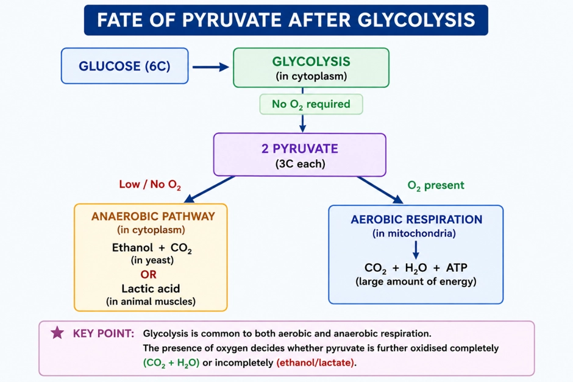
🎯Key Concepts
- 🧬Universal step: glycolysis in cytoplasm makes pyruvate even when O2 is absent.
- 🌬️O2 is essential for complete oxidation; it acts as final acceptor in aerobic pathways.
- 🔀Decision point: pyruvate fate depends mainly on O2 availability and organism/tissue.
- 🦠Facultative anaerobes switch between aerobic respiration and fermentation as O2 changes.
- ☠️Obligate anaerobes are harmed by O2; they rely on anaerobic metabolism.
- ⚡Fermentation mainly regenerates NAD+ so glycolysis can continue in absence of O2.
🔎OXYGEN AVAILABILITY SCENARIOS (WHAT CELLS DO)
- O2 sufficient: pyruvate enters mitochondria; glucose can be completely oxidised to CO2 + H2O.
- O2 absent/limited: cells keep glycolysis running by converting pyruvate to fermentation end products.
- Anaerobic conditions occur in waterlogged tissues, compact soils, some microbes, and muscle during intense exercise.
- Key idea: energy release is step-wise; glycolysis captures a small part of energy as ATP even without O2.
⚙️TYPES OF ANAEROBES + WHY GLYCOLYSIS IS UNIVERSAL
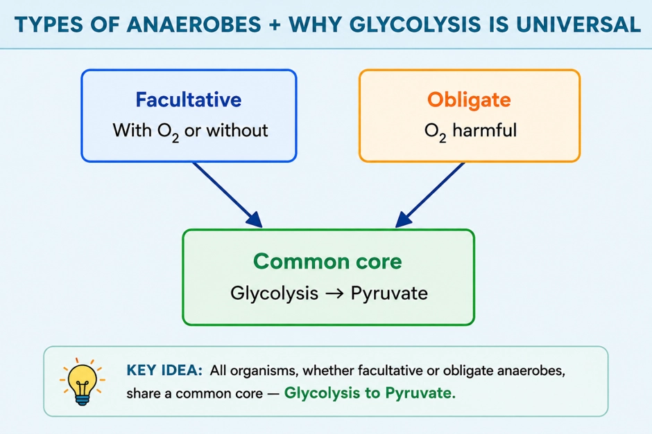
- Facultative anaerobes: use aerobic respiration when O2 is available; shift to fermentation when not.
- Obligate anaerobes: require anaerobic habitat; O2 is toxic due to oxidative damage in many species.
- Evolution link: early atmosphere had little/no O2; anaerobic metabolism likely preceded aerobic respiration.
- Universal machinery: all living cells retain enzymes for partial oxidation of glucose → pyruvate formation without O2.
⚖️AEROBIC vs ANAEROBIC (FERMENTATION)
| Basis | Aerobic respiration | Anaerobic respiration (fermentation) |
|---|---|---|
| O2 requirement | Requires O2 | Occurs without O2 / when O2 is insufficient |
| Extent of oxidation | Complete oxidation of glucose | Partial/incomplete oxidation of glucose |
| End products (typical) | CO2 + H2O | Ethanol + CO2 (yeast) or lactate (muscle/bacteria) |
| Major site (eukaryotes) | Mitochondria after glycolysis | Cytoplasm (glycolysis + fermentation steps) |
| ATP yield idea | High (much more than glycolysis alone) | Low; net ATP mainly from glycolysis |
| Role of fermentation step | Not needed for NAD+ regeneration | Reoxidises NADH to NAD+ to sustain glycolysis |
💡Memory Technique
“Mnemonic: G-P-F (Glycolysis–Pyruvate–Fate)”
Cytoplasmic 10-step pathway: glucose (6C) → 2 pyruvate (3C) with ATP investment, payoff, and NADH formation
GLYCOLYSIS (EMP PATHWAY)
📖Definition & Introduction
- Glycolysis (EMP pathway) is a 10 enzyme-controlled cytoplasmic sequence converting glucose to 2 pyruvate.
- Occurs in cytoplasm of all living organisms; does not require O2 directly.
- In plants, glucose entering glycolysis commonly comes from sucrose (photosynthate) and stored carbohydrates.
- Energy is trapped by substrate-level phosphorylation (ATP formed directly in pathway steps).
- Key reducing power formed: NADH + H+ during oxidation of PGAL (requires inorganic phosphate, Pi).
🖼️Diagram
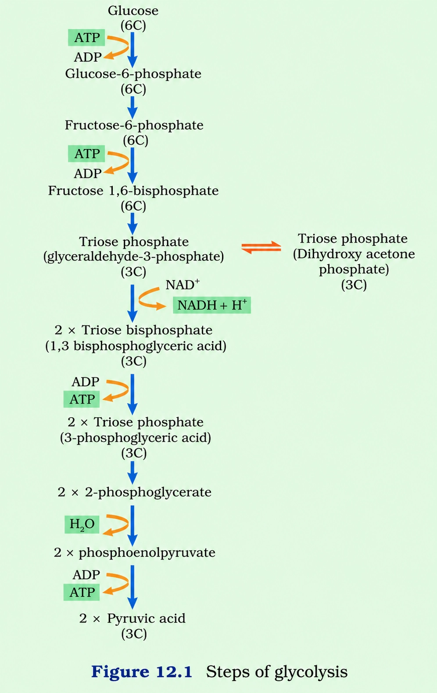
🎯Key Concepts
- 📍Location: cytoplasm; mitochondria act after glycolysis (pyruvate oxidation, TCA, ETS).
- 🍬Plant entry: sucrose —invertase→ glucose + fructose; both are phosphorylated by hexokinase before merging into EMP intermediates.
- 💸ATP investment happens twice early: glucose→G6P and F6P→F1,6-bisphosphate.
- ✂️Split: F1,6-bisphosphate → DHAP + PGAL; DHAP ⇄ PGAL (so 2 PGAL proceed).
- 🔋Only NADH-forming step: PGAL → 1,3-bisphosphoglycerate (needs Pi; NAD+ reduced).
- 💰ATP payoff at two steps: 1,3-BPGA→3-PGA and PEP→pyruvate (each occurs twice per glucose).
🔎STEPWISE MAP (FIRST 5 OF 10 REACTIONS) + WHAT TO TRACK
- 1 Glucose → G6P (hexokinase; ATP used).
- 2 G6P → F6P (isomerisation).
- 3 F6P → F1,6-bisphosphate (PFK; ATP used).
- 4 F1,6BP → DHAP + PGAL (aldolase; split).
- 5 DHAP ⇄ PGAL (triose phosphate isomerase; yields 2 PGAL).
⚙️ENERGY ACCOUNT (PER 1 GLUCOSE) + WHY PAYOFF DOUBLES
- ATP used: 2 total (steps 1 and 3).
- ATP formed: 4 total (steps 7 and 10 happen twice after splitting).
- Net ATP (glycolysis): 2 ATP per glucose.
- NADH formed: 2 NADH + 2 H+ (step 6 occurs twice).
- End product: 2 pyruvate; later fate depends on O2 availability and cell type.
⚖️ENERGY INVESTMENT vs ENERGY PAYOFF IN GLYCOLYSIS
| Basis | Investment phase (early) | Payoff phase (later) |
|---|---|---|
| Main aim | Activate glucose; trap it in cell | Harvest ATP and NADH from trioses |
| ATP change | ATP consumed at 2 steps | ATP produced at 2 steps (but ×2 per glucose) |
| Key intermediates | G6P, F6P, F1,6BP | PGAL, 1,3-BPGA, PEP, pyruvate |
| Redox event | None | PGAL oxidation (with Pi) reduces NAD+ to NADH + H+ |
💡Memory Technique
“Mnemonic: "2 Spend, Split, 2 NADH, 4 Earn"”
After glycolysis: pyruvate follows 3 routes based on O2; fermentation mainly regenerates NAD+.
PYRUVATE FATES AND FERMENTATION
📖Definition & Introduction
- Pyruvate (3C), the end-product of glycolysis, has three major fates: lactic fermentation, alcoholic fermentation, or aerobic oxidation.
- Fermentation is anaerobic, incomplete oxidation of glucose; end-products are lactate or ethanol + CO2.
- Core purpose of fermentation: NADH is reoxidised to NAD+ so glycolysis can continue without O2.
- ATP gain in fermentation is only the net from glycolysis: 2 ATP per glucose.
- < 7% of the energy in glucose is released in fermentation; most remains stored in end-products (lactate/ethanol).
🖼️Diagram
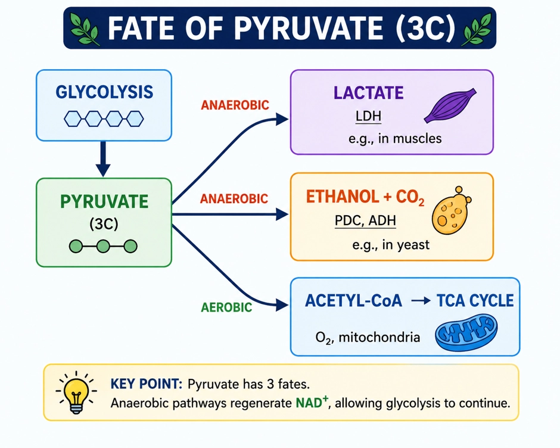
🎯Key Concepts
- 1Decision point: O2 present → mitochondria; O2 absent → fermentation in cytosol
- 2NAD+ regeneration is essential; without NAD+, glycolysis stops at the NADH-forming step
- 3Alcoholic fermentation: common in yeast and some plant tissues under anaerobiosis
- 4Lactic fermentation: in muscle during heavy exercise (temporary O2 shortage) and some bacteria
- 5Fermentation end-products can be toxic: in natural fermentation, about 13% (v/v) ethanol can kill many yeasts
🔎ALCOHOLIC FERMENTATION (YEAST)
- Step 1: Pyruvate → acetaldehyde + CO2; enzyme: pyruvic acid decarboxylase (PDC).
- Step 2: Acetaldehyde → ethanol; enzyme: alcohol dehydrogenase (ADH).
- Reducing power: NADH + H+ is reoxidised to NAD+ during ethanol formation.
- Significance: maintains NAD+ pool to keep glycolysis running anaerobically.
- Limitation: ethanol accumulation is toxic; in natural fermentation, about 13% (v/v) ethanol can kill many yeasts.
⚙️LACTIC ACID FERMENTATION (MUSCLE/BACTERIA)
- Reaction: Pyruvate is reduced to lactate; enzyme: lactate dehydrogenase (LDH).
- NADH donates electrons; NADH + H+ → NAD+ (NAD+ regenerated).
- Occurs when O2 is insufficient (e.g., vigorous exercise) or in lactic acid bacteria.
- No CO2 is released (pyruvate remains 3C as lactate).
- Energy point: still only net 2 ATP per glucose (from glycolysis).
⚖️Three Fates of Pyruvate: Quick Comparison
| Basis | Lactic acid fermentation | Alcoholic fermentation | Aerobic respiration |
|---|---|---|---|
| O2 requirement | Absent / inadequate | Absent | Required (final acceptor in ETS) |
| Site (eukaryotes) | Cytosol | Cytosol | Mitochondria (matrix + inner membrane) |
| Main end-products | Lactate (lactic acid) | Ethanol + CO2 | CO2 + H2O |
| Key enzymes | Lactate dehydrogenase (LDH) | Pyruvic acid decarboxylase (PDC), alcohol dehydrogenase (ADH) | Pyruvate dehydrogenase; TCA enzymes; ETS complexes |
| Role of NADH | NADH reoxidised to NAD+ while forming lactate | NADH reoxidised to NAD+ while forming ethanol | NADH oxidised in ETS; drives ATP synthesis |
| ATP yield per glucose | Net 2 ATP (glycolysis only) | Net 2 ATP (glycolysis only) | High yield (complete oxidation); conventionally ~36–38 ATP/glucose in many textbooks |
💡Memory Technique
“Mnemonic: "PDC pops CO2, ADH adds H"”
Mitochondrial entry of pyruvate → acetyl-CoA link reaction → citrate formation → one decarboxylation to α-ketoglutarate
PYRUVATE OXIDATION & INITIAL TCA (KREBS) STEPS
📖Definition & Introduction
- Pyruvate oxidation is oxidative decarboxylation of pyruvate in the mitochondrial matrix to form acetyl-CoA.
- It links glycolysis (cytoplasm) to the TCA cycle (mitochondrial matrix) in aerobic respiration (eukaryotes).
- The reaction releases CO2 and conserves energy as NADH + H+.
- Acetyl-CoA condenses with oxaloacetate (OAA) to form citrate, starting the Krebs cycle.
- Early TCA includes isomerisation of citrate to isocitrate, then one decarboxylation to form α-ketoglutarate.
🖼️Diagram
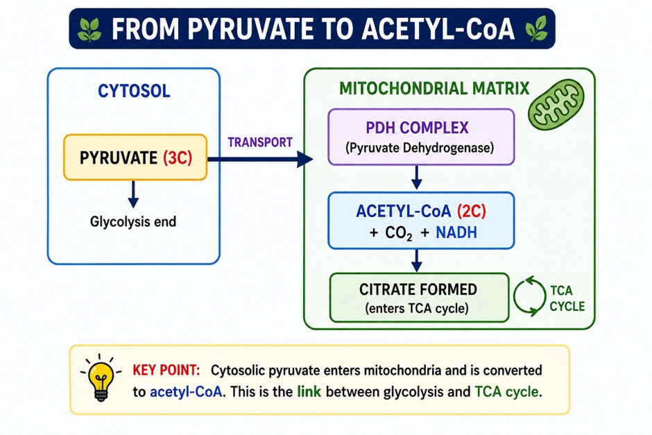
🎯Key Concepts
- 🧫In eukaryotes, pyruvate oxidation and TCA enzymes are in the mitochondrial matrix.
- 🚪Mitochondrial entry: pyruvate is transported from cytosol → matrix before further oxidation.
- 🧩Pyruvate dehydrogenase complex catalyses the link reaction; requires multiple cofactors, including NAD+ and CoA (Mg2+ is indicated as required in the text figure).
- 🔁TCA begins with citrate synthase: acetyl-CoA + OAA + H2O → citrate + CoA (released).
- 🌿TCA produces reduced coenzymes (NADH/FADH2) that later feed the ETS for bulk ATP.
🔎LINK REACTION (PYRUVATE → ACETYL-CoA): WHAT HAPPENS?
- Location: mitochondrial matrix (eukaryotic aerobic respiration).
- Type: oxidative decarboxylation = oxidation + CO2 removal + CoA attachment.
- Enzyme system: pyruvate dehydrogenase complex (PDH) (multi-enzyme complex).
- Requirements (as per text): CoA, NAD+; Mg2+ indicated as required in the text figure.
- Per pyruvate: yields 1 acetyl-CoA + 1 CO2 + 1 NADH + H+.
⚙️INITIAL TCA STEPS (UP TO α-KETOGLUTARATE)
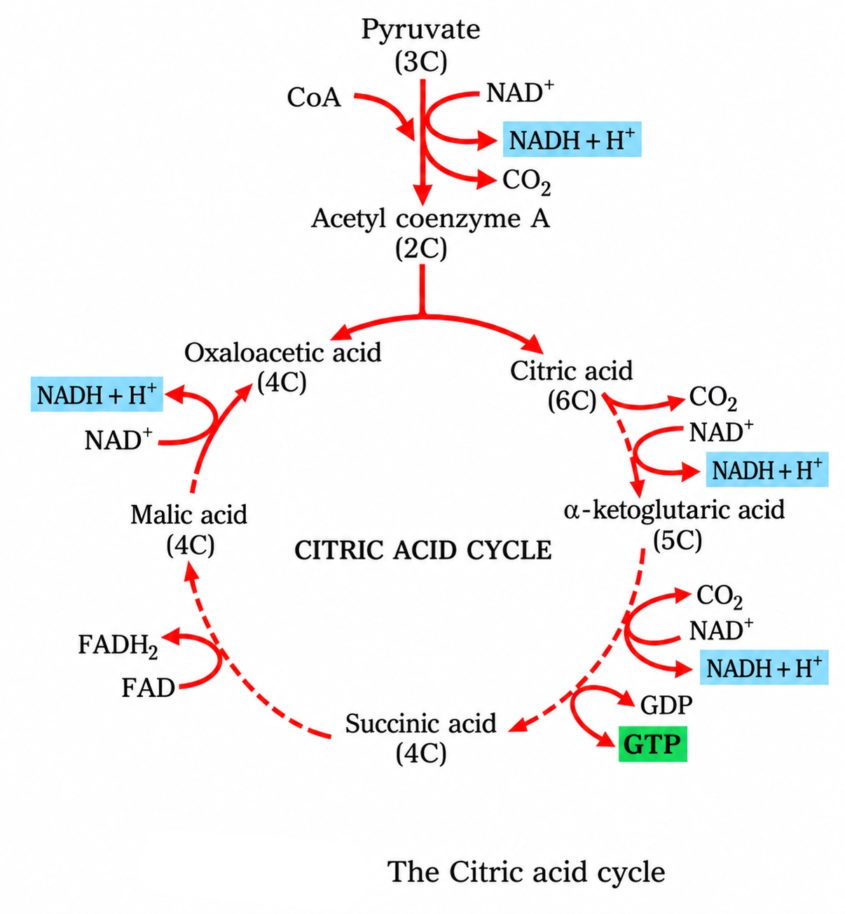
- Entry: acetyl-CoA (2C) combines with OAA (4C) to form citrate (6C).
- Enzyme: citrate synthase; H2O used; CoA released.
- Citrate rearranges to isocitrate by isomerisation via aconitase.
- Isocitrate undergoes one oxidative decarboxylation to produce α-ketoglutarate (5C) + CO2 with NADH formation.
- Note: the next decarboxylation occurs at α-ketoglutarate → succinyl-CoA
⚖️Pyruvate Oxidation vs Initial TCA Steps
| Basis | Pyruvate oxidation (Link reaction) | Initial TCA (up to α-ketoglutarate) |
|---|---|---|
| Main input | Pyruvate (3C) | Acetyl-CoA (2C) + OAA (4C) |
| Main output | Acetyl-CoA + CO2 + NADH + H+ | Citrate (6C) → isocitrate → α-KG (5C) + CO2 (plus NADH) |
| Key enzyme(s) | Pyruvate dehydrogenase complex (PDH) | Citrate synthase; aconitase; isocitrate dehydrogenase |
| Location | Mitochondrial matrix (eukaryotes) | Mitochondrial matrix (eukaryotes) |
| Why important? | Commits pyruvate to aerobic pathway; forms acetyl-CoA for TCA | Begins cyclic oxidation of acetyl groups; releases CO2 and forms NADH |
💡Memory Technique
“Mnemonic: "PDC: Pyruvate Drops CO2, Clings CoA"”
Inner mitochondrial membrane: e− flow to O2 (via I–IV) builds H+ gradient; H+ flow through ATP synthase makes ATP
ETS AND OXIDATIVE PHOSPHORYLATION
📖Definition & Introduction
- Electron Transport System (ETS) is a carrier chain where electrons pass sequentially to finally reduce O2 to H2O.
- Located on the inner mitochondrial membrane; NADH and FADH2 are oxidised here.
- Electron flow through Complex I–IV releases energy; Complex I, III and IV use this energy to build a proton (H+) gradient across the inner membrane.
- Oxidative phosphorylation is ATP formation coupled to oxidation of NADH/FADH2 via ETS.
- ATP synthase (Complex V) uses H+ flow (intermembrane space → matrix) to synthesise ATP from ADP + Pi.
🖼️Diagram
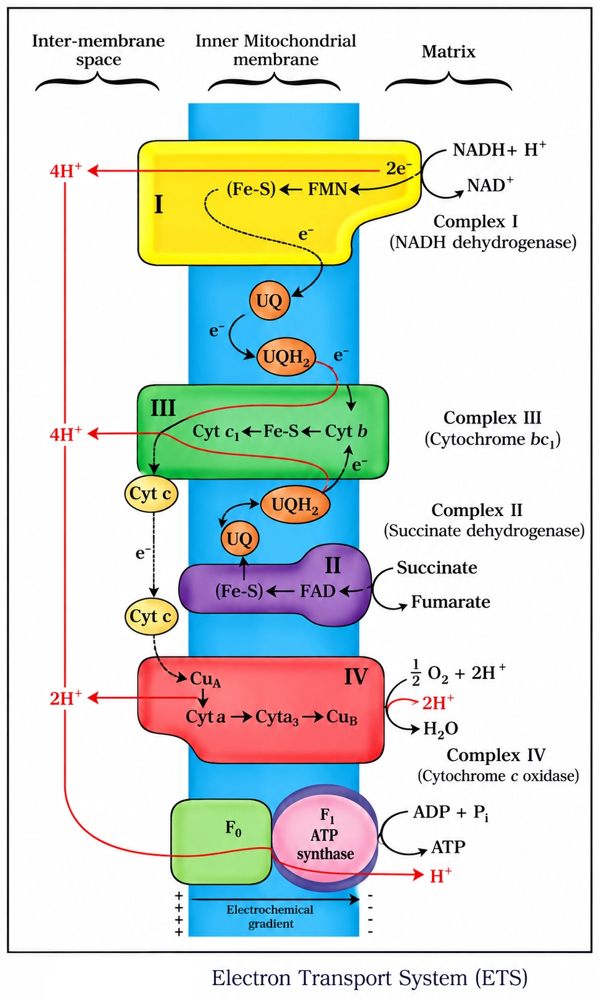
🎯Key Concepts
- 📍ETS components are on the inner mitochondrial membrane; NADH from matrix donates electrons to Complex I.
- 🧩Complex I accepts e− from NADH; Complex II accepts e− from FADH2 (succinate dehydrogenase).
- 🛢️Ubiquinone (Q) is lipid-soluble; it becomes ubiquinol (QH2) after accepting electrons.
- 🧍Cytochrome c is a small mobile protein carrier on the outer surface of inner membrane (III → IV).
- 🌊Complex IV transfers electrons to O2, forming H2O; O2 is the terminal acceptor.
- ⚙️ATP synthase has F0 (H+ channel) + F1 (catalytic head) components.
🔎COMPONENTS AND ELECTRON FLOW (ORDER MATTERS)
- Complex I (NADH dehydrogenase): oxidises NADH (matrix side), passes e− to Q.
- Complex II: accepts e− from FADH2 (succinate → fumarate step), passes e− to Q.
- Ubiquinone (Q): membrane-embedded carrier; reduced form is QH2.
- Complex III (cytochrome bc1): transfers e− from QH2 to cytochrome c.
- Cytochrome c: mobile protein carrier on outer surface of inner membrane; carries e− to Complex IV.
⚙️COUPLING TO ATP SYNTHESIS (OXIDATIVE PHOSPHORYLATION)
- Energy released in ETS creates an electrochemical H+ gradient across the inner membrane.
- Complex I, III and IV pump protons to the intermembrane space; Complex II does not pump protons.
- ATP synthase (Complex V) has F0 (H+ channel) and F1 (catalytic head).
- H+ moves intermembrane space → matrix through F0; this drives ATP formation at F1.
- Why O2 is essential: it removes electrons/hydrogen at the end, allowing NADH/FADH2 oxidation to continue.
⚖️NADH vs FADH2 AS ELECTRON DONORS IN ETS
| Basis | NADH | FADH2 |
|---|---|---|
| Entry complex | Complex I | Complex II |
| Initial carrier after entry | Q (ubiquinone) | Q (ubiquinone) |
| ATP yield (NCERT/exam convention) | 3 ATP per NADH | 2 ATP per FADH2 |
| Key reason for lower yield | Electrons pass through more energy-conserving steps (I, III, IV) | Enters after Complex I, so fewer proton-pumping steps |
💡Memory Technique
“ORDER HOOK: "1-2-Q-3-c-4"”
Complex V uses H+ flow (IMS → matrix, during ATP synthesis) to drive ATP formation by chemiosmotic coupling
ATP SYNTHASE AND PROTON GRADIENT
📖Definition & Introduction
- ATP synthase (Complex V) is an inner-mitochondrial-membrane enzyme that synthesises ATP using the proton (H+) electrochemical gradient (proton motive force).
- It has two parts: F0 (membrane-embedded H+-conducting part) and F1 (matrix-side headpiece with catalytic sites).
- The proton gradient is established mainly by the ETS (Complex I, III, IV) pumping H+ from the matrix to the intermembrane space across the inner membrane.
- During oxidative phosphorylation, H+ flows down the electrochemical gradient through F0 from intermembrane space → matrix.
- This flow is coupled to ATP formation at F1. Exam-safe note: the H+/ATP ratio is not a fixed universal number; it is commonly stated as approximately 3 H+ through F0 per ATP made at F1, and about ~4 H+ per ATP when including associated transport steps (values can vary).
🖼️Diagram
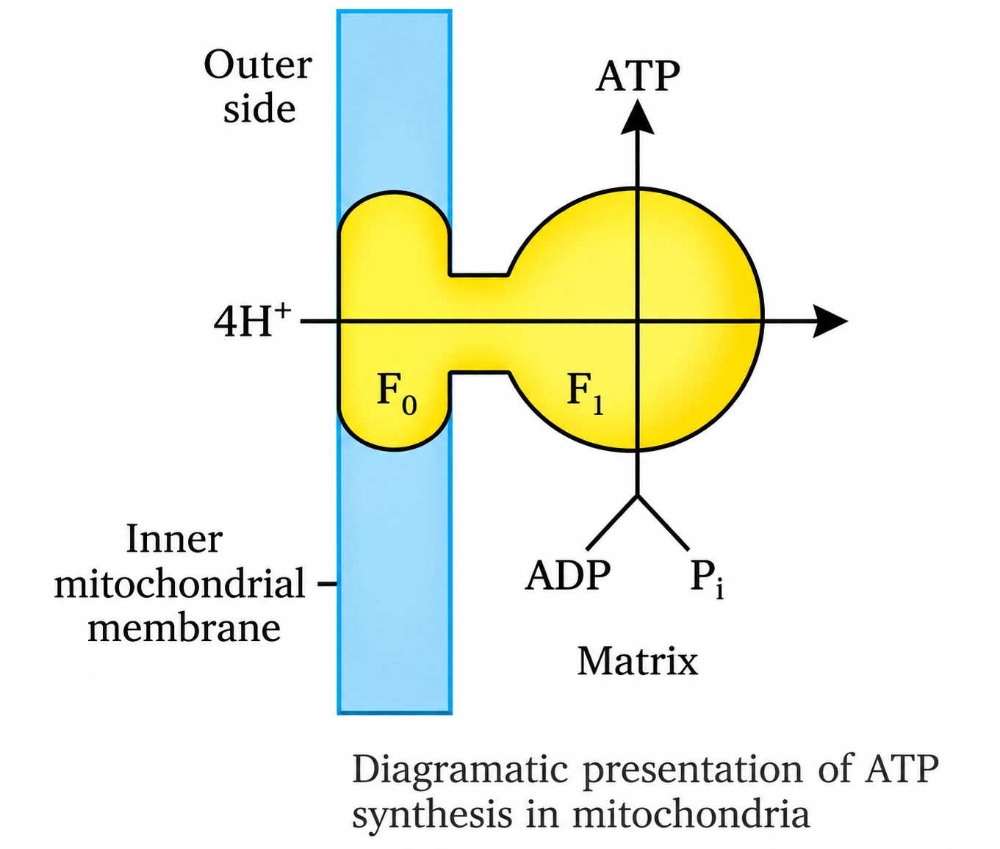
🎯Key Concepts
- 🧩F0 = inner-membrane H+-conducting part; provides the route for H+ return and drives rotation.
- 🎯F1 = catalytic headpiece facing matrix; makes ATP from ADP + Pi.
- ⬇️During ATP synthesis in mitochondria, net H+ movement is IMS → matrix (not matrix → IMS).
- ⚡Proton gradient is electrochemical: concentration difference (ΔpH) + membrane potential (Δψ).
- 🔗Chemiosmotic coupling: energy stored in the proton motive force drives ATP synthesis.
- ≈Stoichiometry is variable: many texts use ~3 H+/ATP (F0), or ~4 H+/ATP when transport costs are included.
🔎F0–F1 ARCHITECTURE
- F0: integral inner-membrane part; conducts H+ across the membrane and participates in rotation.
- F1: peripheral headpiece on matrix side; contains catalytic sites for ATP formation.
- Recall cue: F0 is in the membrane; F1 is the head in the matrix.
- Complex V makes ATP; Complex I–IV mainly establish the H+ gradient.
⚙️CHEMIOSMOTIC COUPLING: DIRECTION + STOICHIOMETRY
- During ATP synthesis, protons move down the electrochemical gradient: IMS → matrix.
- Energy for ATP synthesis comes from proton motive force, not from oxygen binding to ATP synthase.
- Stoichiometry note: H+/ATP is often quoted approximately (e.g., ~3 through F0 per ATP at F1), and can be ~4 per ATP when transport costs are included; values vary with system.
- Exam phrase: proton motive force (Δψ + ΔpH) drives ATP synthesis.
⚖️F0 vs F1 (ATP synthase components)
| Basis | F0 | F1 |
|---|---|---|
| Location | Embedded in inner mitochondrial membrane | Projects into matrix (peripheral headpiece) |
| Main role | Provides H+ pathway and rotates with proton flow | Catalyses ATP formation from ADP + Pi |
| What it "handles" | H+ movement across inner membrane | ATP synthesis at catalytic sites |
| Exam wording | Transmembrane part | Catalytic headpiece |
💡Memory Technique
“Mnemonic: “F0 = pORe, F1 = 1 head makes ATP””
Classic theoretical yield (often written as 38 ATP per glucose under older P/O ratios): assumptions, accounting, and why real yield is lower/variable
RESPIRATORY BALANCE SHEET
📖Definition & Introduction
- Respiratory balance sheet is an ATP accounting of net gain per glucose during aerobic respiration.
- It is largely theoretical because real cells run multiple pathways simultaneously and share intermediates.
- A classic textbook total is often written as 38 ATP per glucose under idealised assumptions (older convention used in many exam-style explanations).
- It assumes reducing equivalents from glycolytic NADH are transferred into mitochondria (via shuttles) and are fully oxidised via ETS to make ATP.
- It assumes no diversion of intermediates for biosynthesis and only glucose is the respiratory substrate.
🎯Key Concepts
- 🧮A classic theoretical net ATP per glucose (aerobic) is written as 38 under older P/O ratios and ideal assumptions.
- 🧬Assumption set: sequential pathway, cytosolic NADH equivalents transferred to mitochondria, no withdrawals, only glucose.
- 🔁Reality: pathways simultaneous; intermediates are withdrawn for anabolism and replenished as needed.
- ⚙️ATP has continuous turnover; regulatory controls alter flux and effective ATP yield.
- 🚪Cytosolic NADH does not directly cross the inner mitochondrial membrane; shuttles transfer electrons and can change ATP equivalents.
🔎CLASSIC THEORETICAL ATP ACCOUNTING (OFTEN WRITTEN AS 38 ATP) — WHAT IS BEING COUNTED?
- Direct (substrate-level) ATP: 2 from glycolysis + 2 from TCA (as GTP/ATP).
- Reduced coenzymes counted with classic P/O ratios (older convention): 1 NADH → 3 ATP, 1 FADH2 → 2 ATP.
- Per glucose (classic count): total NADH = 10 (2 glycolysis + 2 link + 6 TCA); total FADH2 = 2 (TCA).
- ATP from coenzymes (classic): 10 NADH → 30 ATP; 2 FADH2 → 4 ATP; plus 4 direct ATP ⇒ 38 ATP.
- This is an exam-model yield under stated assumptions, not a guaranteed cellular output.
⚙️WHY REAL CELLULAR YIELD DIFFERS
- Pathways run simultaneously; not strictly glycolysis → TCA → ETS in perfect sequence.
- Glycolytic NADH is formed in cytosol; electrons reach mitochondria via shuttles, changing ATP equivalents.
- Intermediates are withdrawn for biosynthesis (amphibolic nature), so fewer molecules reach full oxidation.
- ATP is in constant turnover; some energy is spent in transport and maintenance, lowering net gain.
- Multiple regulatory mechanisms change enzyme rates and flux, so ATP per glucose is context-dependent.
⚖️THEORY (BALANCE SHEET) vs REAL CELL CONDITIONS
| Basis | Theoretical balance sheet | Real cellular condition |
|---|---|---|
| Pathway order | Sequential and orderly | Simultaneous, interconnected |
| Cytosolic NADH (from glycolysis) | Reducing equivalents assumed to reach mitochondria and yield ATP ideally | Electrons transferred via shuttles; ATP equivalent may be lower |
| Intermediates | No diversion for synthesis | Withdrawn for anabolism; replenished as needed |
| Respiratory substrate | Only glucose oxidised | Multiple substrates enter at different points |
| ATP usage | Counted only as production | Continuous ATP turnover and cellular costs |
| Control | Implicitly unregulated steady flow | Strong regulation alters flux and yield |
💡Memory Technique
“Mnemonic: "S-G-N-O" = Assumptions behind the classic balance sheet”
Respiration = breakdown + supply of precursors; RQ indicates the main substrate oxidised
AMPHIBOLIC PATHWAY AND RESPIRATORY QUOTIENT (RQ)
📖Definition & Introduction
- Amphibolic pathway: a pathway that functions in both catabolism and anabolism.
- Respiration is not purely catabolic because intermediates are withdrawn for biosynthesis (amino acids, fatty acids, etc.).
- Fats and proteins enter the respiratory pathway at different points, not only via glucose.
- Respiratory Quotient (RQ) is the ratio of CO2 evolved to O2 consumed during respiration.
- RQ depends mainly on substrate: carbohydrate ≈ 1, fats < 1, proteins ≈ 0.9.
🖼️Diagram
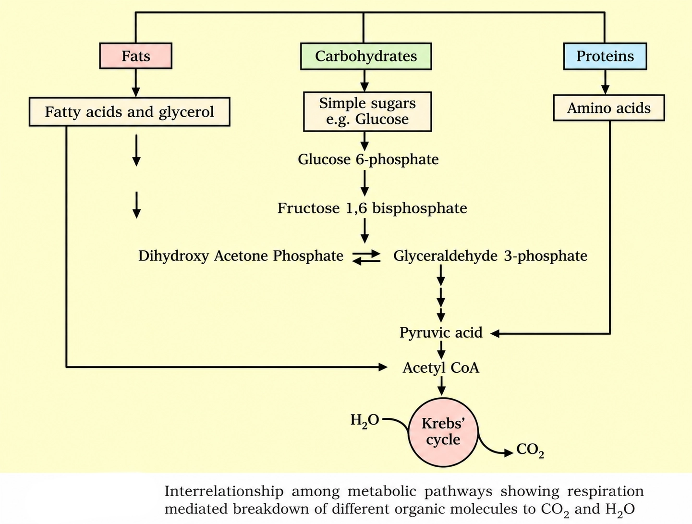
🎯Key Concepts
- HUBRespiration is a metabolic hub: intermediates serve breakdown and synthesis.
- FATSFatty acids → β-oxidation → acetyl CoA; glycerol → PGAL (glycolysis).
- PROTProteins → amino acids → deamination; skeleton enters as pyruvate/acetyl CoA/TCA intermediates.
- RQRQ indicates substrate: fats need more O2 → RQ < 1.
- VALUTypical RQ: carbohydrates = 1.0, proteins ≈ 0.9, fats (tripalmitin ≈ 0.7).
🔎WHY RESPIRATION IS AMPHIBOLIC
- Catabolic role: oxidises substrates to CO2 + H2O; energy conserved as ATP.
- Anabolic role: supplies carbon skeletons for biosynthesis.
- So it links breakdown and synthesis, not only "burning".
- Example: TCA intermediates can be withdrawn to form amino acids.
⚙️ENTRY POINTS OF FATS & PROTEINS (EXAM-FAVOURITE)
- Fats split into glycerol + fatty acids (lipase action).
- Glycerol enters glycolysis after conversion to PGAL (G3P).
- Fatty acids undergo β-oxidation → multiple acetyl CoA → TCA cycle.
- Proteins → amino acids; amino group removed by deamination.
- Carbon skeleton enters as pyruvate, acetyl CoA, or TCA intermediates.
⚖️RQ VALUES WITH COMMON SUBSTRATES
| Substrate oxidised | Typical RQ | Key reason |
|---|---|---|
| Carbohydrates (e.g., glucose) | 1.0 | CO2 evolved ≈ O2 consumed in complete oxidation |
| Fats (e.g., tripalmitin) | < 1 (≈ 0.7) | More O2 needed due to high H content; CO2/O2 becomes smaller |
| Proteins | ≈ 0.9 | After deamination, carbon skeleton is oxidised; mixed oxidation state |
💡Memory Technique
“Mnemonic: F-G-P and 1-0.7-0.9”